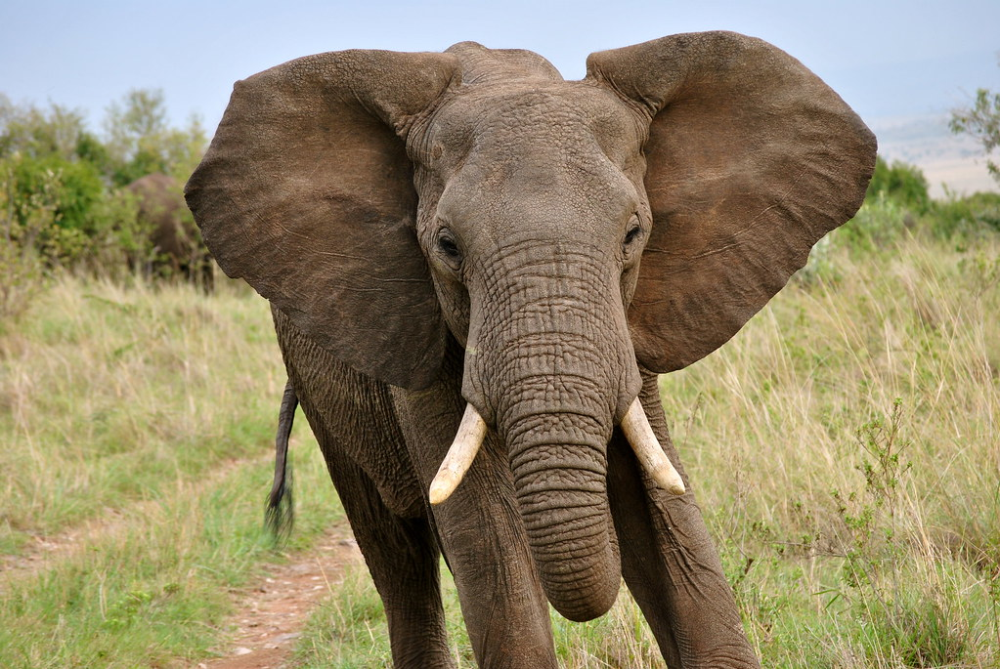

Top 10 Deadliest Animals
500 deaths per year
We may perhaps think of elephants as gentle, thoughtful creatures, but they can also be deadly. This is in part due to their sheer size and weight, as the largest living land animals.
Because of habitat loss and encroaching farmlands into elephant home areas, they are coming into contact with humans more and more frequently, and this has led to conflict.
Groups of elephants have been known to raid farms and villages, and will gore or trample any humans that get in the way. One blow from an elephant is enough to kill, and around 500 deaths a year are caused in this way.
